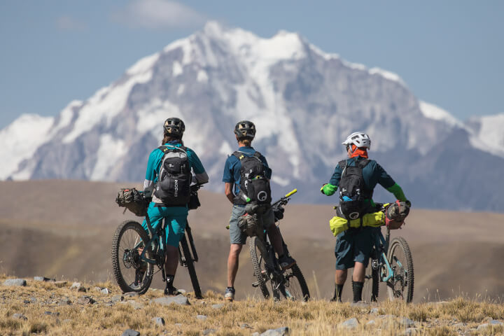

THE OBJECTIVE: COMPLETE THE FIRST EVER MULTI-DAY BIKE TRAVERSE OF THE CORDILLERA REAL’S WEST SIDE.
This past summer a crew of four Yeti ambassadors – Nate Hills, Thomas Woodson, Carston Oliver, and Joey Schusler, set out on a 2-week bikepacking trip to Bolivia. The objective was to complete the first ever multi-day bike traverse of the Cordillera Real’s west side following llama trails, open scree fields, and primitive trekking paths. These mountains proved to be one of our greatest challenges to date.